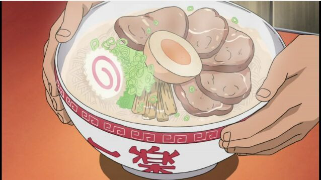

Naruto's Favorite Ramen

Description
When we think about a meal so beloved in an anime that the main character
eats it almost every episode, the first thought is Naruto's delicious
ramen bowl.
Naruto's ramen looks so good, yet so simple only being a miso based ramen with extra charsu!
Ingredients
Broth + Noodles
- 1/2 lb pork bones
- 4 liters of water
- Fresh ginger
- Strip of kombu
- 2 1/2 tbsp sake
- 1 1/2 tbsp soy sauce
- 1/2 tsp sugar
- 8 tbsp miso
- Ramen noodles
Charsu
- 1 lb slab pork belly
- salt
- Fresh ginger
- 2/3 cup water
- 1/3 cup sake
- 1/3 cup soy sauce
- 3 tbsp sugar
Additional Toppings
- Green onions
- fish cake
- Preserved bamboo shoots
- Boiled egg
Steps
-
Start with the broth. Throw bones, ginger,
and water into a stock pot. Begin to boil.
As it boils, strain off any scum that floats to the top.
Reduce to a simmer, and let simmer about 6 hours.
Replace water as needed, so that it is always at the same level and bones are covered.
When it is ready, strain the broth to remove the ginger, bones, and any debris in the broth.
-
Throw kombu into the pot with the strained broth,
and bring back up to a simmer. Let simmer about
15 minutes. Remove kombu, and add in sake, soy sauce,
and sugar. Stir well, and then take a ladle full of broth,
and mix it into the miso to thin it out. Add in parts, tasting as you go,
until you're happy with the saltiness of your broth.
-
Finally, add in the chili paste to the broth as desired.
The purpose is to add a little complexity and give it a
slight kick, but add at your own discretion. Set aside in the
fridge overnight, or set aside while you prepare the rest of the ingredients.
-
Let's work on the Chasu! Salt the entirety of your slab
of pork belly. Roll up, and use a skewer or butcher's
twine to secure the roll.
-
Heat a neutral oil (like vegetable) over high heat in a
pan. When hot, brown the pork roll, about 4-5 minutes
each side, and 1-2 minutes on the edges of the roll.
When ready, remove from pan, and wipe the pan out. Put
in the liquids, the sugar, and the ginger, and place the pork back in the pan.
Bring up to a simmer. Cover with a foil lid to promote even distribution of cooking.
-
Flip once, halfway through cooking, which should take about 45
minutes to an hour. It is ready when the sauce is thickened and
you can see the bottom of the pan when you push the pork around.
When the sauce begins to bubble up, and the pork has a
nice shiny coating, it's ready. Remove from pan, with
sauce, and set aside or store in fridge until you are
ready to use.
-
Prepare toppings. Slice the green onions finely,
slice the naruto, get out the menma (they usually come
prepared in a jar or tin), slice eggs in half, and slice
the pork so that you get thin slices of swirled pork.
-
Put a pot of water on to boil. When boiling, place fresh
ramen noodles into a strainer, and deposit into the water.
Allow to cook about 90 seconds, or until noodles are bouncy.
Immediately remove from the water with the strainer, and put in serving bowl.
-
Ladle broth over the noodles, and then top with the
toppings as you see fit! For the proper Naruto ramen,
you need five slices of chasu, a handful of chopped green onions,
some slices of naruto, menma, and one half of a soft boiled egg.
ENJOY!!